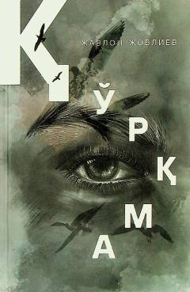

QGermaniyada o'qigan o'zbek talabalarining fojiali va ibratli qismatiga bag'ishlangan ta'sirli roman.
Ushbu roman o'tgan asr boshida Germaniyada o'qigan va sovet hukumati tomonidan qat'iy qismatga uchragan o'zbek talabalari taqdiriga bag'ishlangan. Asarda milliyat, sof muhabbat, tarix va bugunning bog'liqligi chuqur badiiy tilda ochib berilgan. Muallif o'quvchini o'tmish va kelajak o'rtasidagi og'ir o'ylar, fojialar va hayotiy haqiqatlar bilan yuzma-yuz qo'yadi.